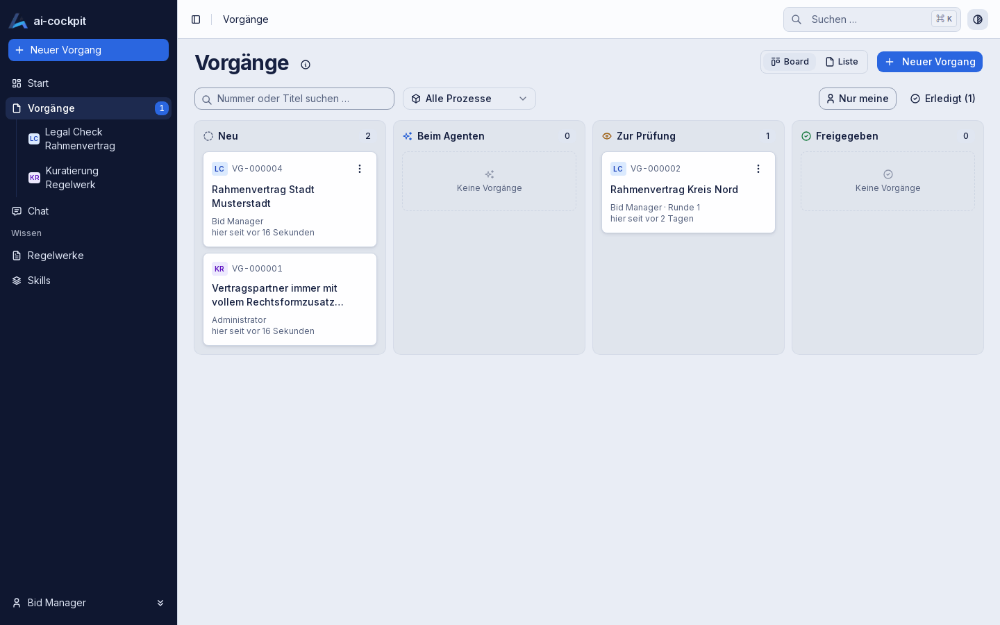

Decisions carry a reason
Approval, return and withdrawal need a written reason. Each one is logged with who decided and when.
AI-native process platform
ai-cockpit lets business units hand recurring, knowledge-based work to AI agents — configured instead of programmed. A person decides at defined points, and every decision is on record with author, time and reason.

Why ai-cockpit
Four properties make the difference together. None of them is unique alone.
Approval, return and withdrawal need a written reason. Each one is logged with who decided and when.
The rules an agent checks against are maintained, versioned and released — not buried in a prompt.
Every run records its inputs, its model and the ruleset version it used.
On-premises by design. The model sits behind a gateway, can be exchanged, and is labelled in every result.
How it works
Upload the documents and fill in a short form. The form comes from the process definition — a new process needs no new screen.
It checks the documents against the released ruleset and returns structured data: a finding per checkpoint, each with the passage it rests on.
The reviewer approves or returns the result with a comment. A return starts a new round that takes the comment into account.
One place for all work
Cases of all processes share the same columns, from new to approved. Filter by process, search, or switch to the list. Human steps are a drag away; steps of the agent cannot be moved by hand.

First process
An agent checks a contract against a catalogue of 32 checkpoints. The reviewer gets the result at a glance and what to do, grouped by action, with the evidence quoted verbatim, every checkpoint by cluster and wording issues — and exports the report into the company's Word template.

One process is live end to end. More processes, more administration and self-service follow in stages.